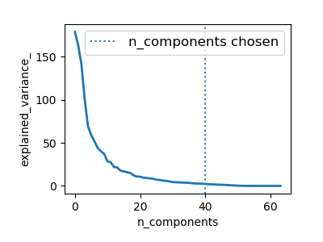

Putting it all together¶
Pipelining¶
We have seen that some estimators can transform data and that some estimators can predict variables. We can also create combined estimators:
from sklearn import linear_model, decomposition, datasets
from sklearn.pipeline import Pipeline
from sklearn.model_selection import GridSearchCV
logistic = linear_model.LogisticRegression()
pca = decomposition.PCA()
pipe = Pipeline(steps=[('pca', pca), ('logistic', logistic)])
digits = datasets.load_digits()
X_digits = digits.data
y_digits = digits.target
# Plot the PCA spectrum
pca.fit(X_digits)
plt.figure(1, figsize=(4, 3))
plt.clf()
plt.axes([.2, .2, .7, .7])
plt.plot(pca.explained_variance_, linewidth=2)
plt.axis('tight')
plt.xlabel('n_components')
plt.ylabel('explained_variance_')
# Prediction
n_components = [20, 40, 64]
Cs = np.logspace(-4, 4, 3)
# Parameters of pipelines can be set using ‘__’ separated parameter names:
estimator = GridSearchCV(pipe,
dict(pca__n_components=n_components,
logistic__C=Cs))
estimator.fit(X_digits, y_digits)
plt.axvline(estimator.best_estimator_.named_steps['pca'].n_components,
linestyle=':', label='n_components chosen')
plt.legend(prop=dict(size=12))
plt.show()
Face recognition with eigenfaces¶
The dataset used in this example is a preprocessed excerpt of the “Labeled Faces in the Wild”, also known as LFW:
 |
 |
| Prediction | Eigenfaces |
Expected results for the top 5 most represented people in the dataset:
precision recall f1-score support
Gerhard_Schroeder 0.91 0.75 0.82 28
Donald_Rumsfeld 0.84 0.82 0.83 33
Tony_Blair 0.65 0.82 0.73 34
Colin_Powell 0.78 0.88 0.83 58
George_W_Bush 0.93 0.86 0.90 129
avg / total 0.86 0.84 0.85 282
Open problem: Stock Market Structure¶
Can we predict the variation in stock prices for Google over a given time frame?